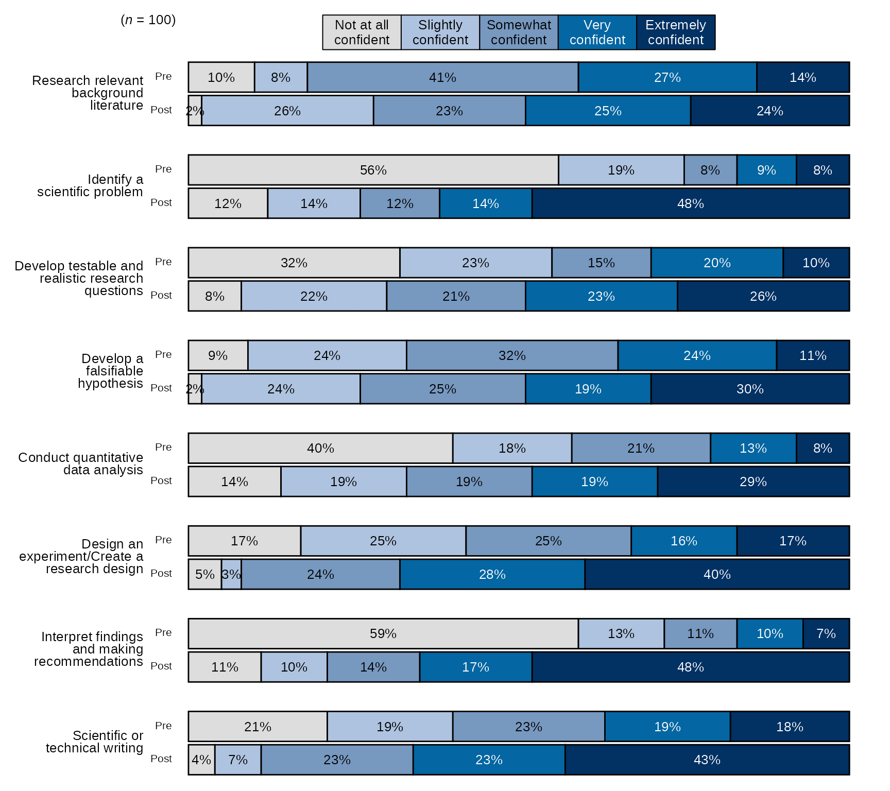
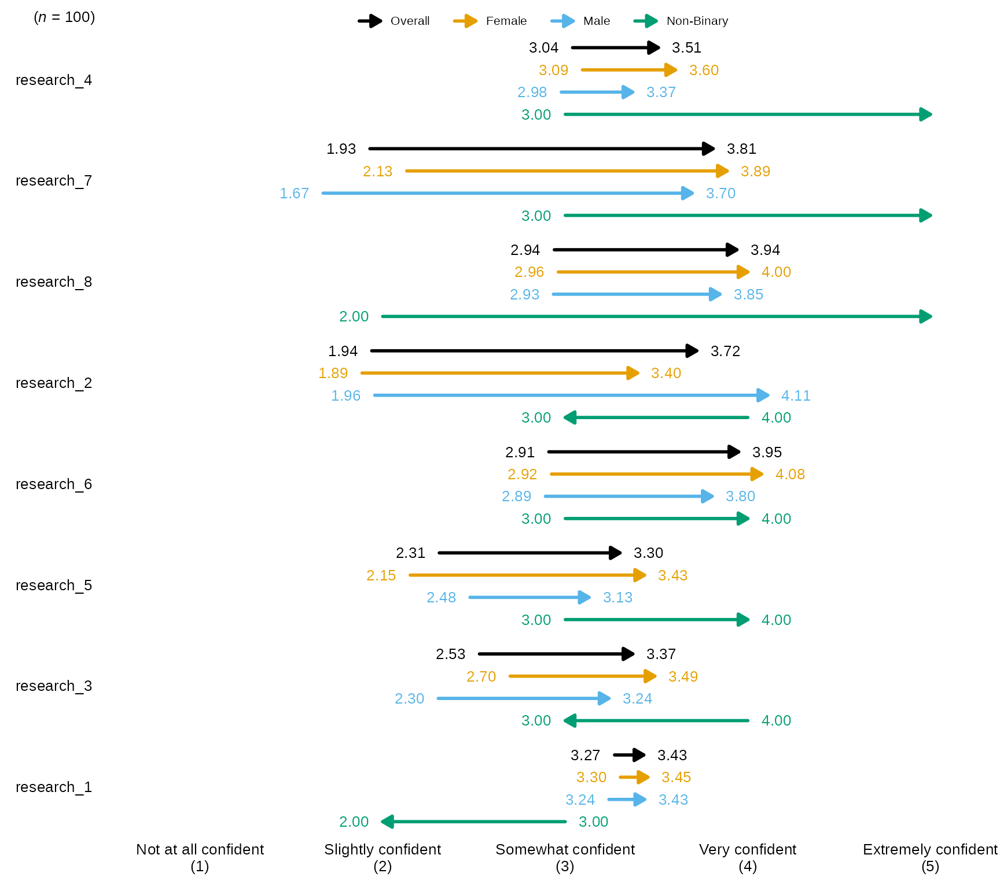
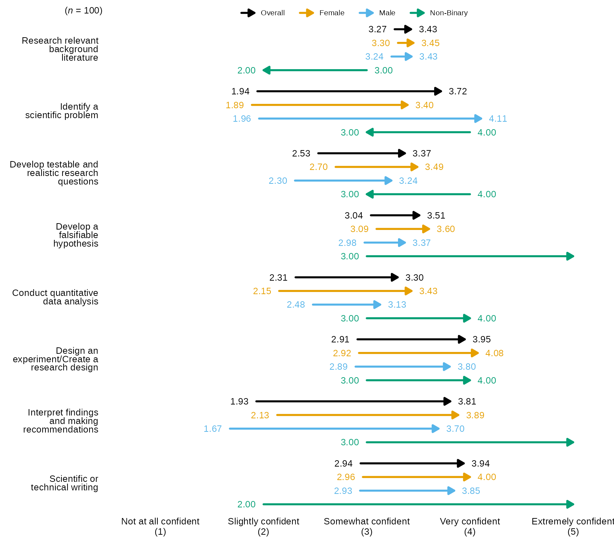

blackstone contains many functions for data
visualization. This vignette shows you:
How to determine which color palettes to use in visuals.
How create stacked bar charts.
How create diverging stacked bar charts.
How create arrow charts.
We’ll start by loading blackstone:
Read in Example Data
First, read in the data that is merged and cleaned in the vignette Importing and Cleaning Data:
# Read in clean SM data:
sm_data <- readr::read_csv(blackstone::blackstoneExample("sm_data_clean.csv"), show_col_types = FALSE)
## Set up character vectors of likert scale levels:
## Knowledge scale
levels_knowledge <- c("Not knowledgeable at all", "A little knowledgeable", "Somewhat knowledgeable", "Very knowledgeable", "Extremely knowledgeable")
## Research Items scale:
levels_confidence <- c("Not at all confident", "Slightly confident", "Somewhat confident", "Very confident", "Extremely confident")
## Ability Items scale:
levels_min_ext <- c("Minimal", "Slight", "Moderate", "Good", "Extensive")
## Ethics Items scale:
levels_agree5 <- c("Strongly disagree", "Disagree", "Neither agree nor disagree", "Agree", "Strongly agree")
# Demographic levels:
gender_levels <- c("Female","Male","Non-binary", "Do not wish to specify")
ethnicity_levels <- c("White (Non-Hispanic/Latino)", "Asian", "Black", "Hispanic or Latino", "American Indian or Alaskan Native",
"Native Hawaiian or other Pacific Islander", "Do not wish to specify")
first_gen_levels <- c("Yes", "No", "I'm not sure")
# Use mutate() for convert each item in each scale to a factor with vectors above, across() will perform a function for items selected using contains() or can be selected
# by variables names individually using a character vector: _knowledge or use c("pre_knowledg","post_knowledge")
# Also create new numeric variables for all the likert scale items and use the suffix '_num' to denote numeric:
sm_data <- sm_data %>% dplyr::mutate(dplyr::across(tidyselect::contains("_knowledge"), ~ factor(., levels = levels_knowledge)), # match each name pattern to select to each factor level
dplyr::across(tidyselect::contains("_knowledge"), as.numeric, .names = "{.col}_num"), # create new numeric items for all knowledge items
dplyr::across(tidyselect::contains("research_"), ~ factor(., levels = levels_confidence)),
dplyr::across(tidyselect::contains("research_"), as.numeric, .names = "{.col}_num"), # create new numeric items for all research items
dplyr::across(tidyselect::contains("ability_"), ~ factor(., levels = levels_min_ext)),
dplyr::across(tidyselect::contains("ability_"), as.numeric, .names = "{.col}_num"), # create new numeric items for all ability items
# select ethics items but not the open_ended responses:
dplyr::across(tidyselect::contains("ethics_") & !tidyselect::contains("_oe"), ~ factor(., levels = levels_agree5)),
dplyr::across(tidyselect::contains("ethics_") & !tidyselect::contains("_oe"), as.numeric, .names = "{.col}_num"), # new numeric items for all ethics items
# individually convert all demographics to factor variables:
gender = factor(gender, levels = gender_levels),
ethnicity = factor(ethnicity, levels = ethnicity_levels),
first_gen = factor(first_gen, levels = first_gen_levels),
)
sm_data
#> # A tibble: 100 × 97
#> respondent_id collector_id start_date end_date ip_address email_address
#> <dbl> <dbl> <date> <date> <chr> <chr>
#> 1 114628000001 431822954 2024-06-05 2024-06-06 227.224.138.113 coraima59@me…
#> 2 114628000002 431822954 2024-06-21 2024-06-22 110.241.132.50 mstamm@hermi…
#> 3 114628000003 431822954 2024-06-14 2024-06-15 165.58.112.64 precious.fei…
#> 4 114628000004 431822954 2024-06-15 2024-06-16 49.34.121.147 ines52@gmail…
#> 5 114628000005 431822954 2024-06-15 2024-06-16 115.233.66.80 franz44@hotm…
#> # ℹ 95 more rows
#> # ℹ 91 more variables: first_name <chr>, last_name <chr>, unique_id <dbl>,
#> # pre_knowledge <fct>, pre_research_1 <fct>, pre_research_2 <fct>,
#> # pre_research_3 <fct>, pre_research_4 <fct>, pre_research_5 <fct>,
#> # pre_research_6 <fct>, pre_research_7 <fct>, pre_research_8 <fct>,
#> # pre_ability_1 <fct>, pre_ability_2 <fct>, pre_ability_3 <fct>,
#> # pre_ability_4 <fct>, pre_ability_5 <fct>, pre_ability_6 <fct>, …Color Palettes
blackstone has functions that create 3 types of charts
for data visualization: stacked bar charts, diverging stacked bar
charts, and arrow charts.
The functions for stacked bar charts and diverging stacked bar charts can use two different color palettes: a blue sequential palette or a blue-red diverging color palette.
The blue sequential palette should be used for all likert scales that have one clear direction like: Not at all confident, Slightly confident, Somewhat confident, Very confident, Extremely confident
The blue-red diverging color palette should be used if the items have a likert scale that is folded or runs from a negative to positive valence like this: Strongly disagree, Disagree, Neither agree nor disagree, Agree, Strongly agree
The next three sections show examples on how to use these functions.
Stacked Bar Charts
The most common visual that is used with reporting at Blackstone
Research and Evaluation is a stacked bar chart, blackstone
has a function to that makes creating these charts fast and easy:
stackedBarChart().
stackedBarChart() takes in a tibble of factor/character
variables to turn into a stacked bar chart. The other requirement is a
character vector of scale labels for the likert scale that makes up the
items in the tibble (same as the one use to set them up as factors in
the data cleaning section).
Pre-post Stacked Bar Chart with Overall n and Percentages
- By default,
stackedBarChart()uses the blue sequential palette to color the bars and sorts the items by the ones with the highest post items with the highest counts/percentages.
# Research Items scale:
levels_confidence <- c("Not at all confident", "Slightly confident", "Somewhat confident", "Very confident", "Extremely confident")
# select variables and pass them to `stackedBarChart()` along with scale_labels.
sm_data %>% dplyr::select(tidyselect::contains("research_") & !tidyselect::contains("_num") & where(is.factor)) %>% # select the factor variables for the research items
blackstone::stackedBarChart(., scale_labels = levels_confidence, pre_post = TRUE)Pre-post Stacked Bar Chart with Individual Item n and Counts
# Select variables and pass them to `stackedBarChart()` along with scale_labels, change the arguements `percent_label` and `overall_n` both to FALSE:
sm_data %>% dplyr::select(tidyselect::contains("research_") & !tidyselect::contains("_num") & where(is.factor)) %>% # select the factor variables for the research items
blackstone::stackedBarChart(., scale_labels = levels_confidence, pre_post = TRUE, percent_label = FALSE, overall_n = FALSE)Pre-post Stacked Bar Chart with Blue-Red Diverging Color Palette
## Ethics Items scale:
levels_agree5 <- c("Strongly disagree", "Disagree", "Neither agree nor disagree", "Agree", "Strongly agree")
# select variables and pass them to `stackedBarChart()` along with scale_labels,
# change `fill_colors` to "div" to use the blue-red diverging color palette:
sm_data %>% dplyr::select(tidyselect::contains("ethics_") & !tidyselect::contains("_num") & # select the factor variables for the ethics items
!tidyselect::contains("_oe") & where(is.factor)) %>%
blackstone::stackedBarChart(., scale_labels = levels_agree5, pre_post = TRUE, fill_colors = "div")Pre-post Stacked Bar Chart with New Question Labels and Order:
# Question labels as a named vector with the naming structure
# like this: c("new label" = "original variable name"), where the
# names are the new question labels and the old names are the values without pre or post prefixes:
# Here I will use paste0 to create 8 research items like they appear without prefixes:
research_question_labels <- paste0(paste0("research_", 1:8))
# Set new labels as names of `research_question_labels`
names(research_question_labels) <- c("Research relevant background literature", "Identify a scientific problem",
"Develop testable and realistic research questions", "Develop a falsifiable hypothesis",
"Conduct quantitative data analysis", "Design an experiment/Create a research design",
"Interpret findings and making recommendations", "Scientific or technical writing")
# select variables and pass them to `stackedBarChart()` along with scale_labels, also pass research_question_labels to `question_labels` and set `question_order` to TRUE.
sm_data %>% dplyr::select(tidyselect::contains("research_") & !tidyselect::contains("_num") & where(is.factor)) %>% # select the factor variables for the research items
blackstone::stackedBarChart(., scale_labels = levels_confidence, pre_post = TRUE, question_labels = research_question_labels, question_order = TRUE)
Single time point Stacked Bar Chart with New Question Labels and Order
# Question labels as a named vector with the naming structure
# like this: c("new label" = "original variable name"), where the
# names are the new question labels and the old names are the values without pre or post prefixes:
# Here I will use paste0 to create 8 research items like they appear without prefixes:
research_question_labels <- paste0(paste0("post_research_", 1:8))
# Set new labels as names of `research_question_labels`
names(research_question_labels) <- c("Research relevant background literature", "Identify a scientific problem",
"Develop testable and realistic research questions", "Develop a falsifiable hypothesis",
"Conduct quantitative data analysis", "Design an experiment/Create a research design",
"Interpret findings and making recommendations", "Scientific or technical writing")
# select variables and pass them to `stackedBarChart()` along with scale_labels, set pre_post to FALSE (default),
# also pass research_question_labels to `question_labels` and set `question_order` to TRUE.
sm_data %>% dplyr::select(tidyselect::contains("post_research_") & !tidyselect::contains("_num") & where(is.factor)) %>% # select the factor variables for the research items
blackstone::stackedBarChart(., scale_labels = levels_confidence, question_labels = research_question_labels, question_order = TRUE)Diverging Stacked Bar Charts
Another common visual that is used with reporting at Blackstone
Research and Evaluation is a diverging stacked bar chart, which I will
refer to from now on as a diverging bar chart. blackstone
has a function to make this type of chart, it is called:
divBarChart().
The diverging bar charts created using divBarChart(),
diverge just after the mid-point of the likert scale of the items
supplied to the function. See examples below.
divBarChart() has all of the same arguments as
stackedBarChart(), so using it has the same
requirements.
Pre-post Diverging Bar Chart with Overall n and Percentages
- By default,
divBarChart()uses the blue sequential palette to color the bars and sorts the items by the ones with the highest post items with the highest counts/percentages.
# Research Items scale:
levels_confidence <- c("Not at all confident", "Slightly confident", "Somewhat confident", "Very confident", "Extremely confident")
# select variables and pass them to `divBarChart()` along with scale_labels.
sm_data %>% dplyr::select(tidyselect::contains("research_") & !tidyselect::contains("_num") & where(is.factor)) %>% # select the factor variables for the research items
blackstone::divBarChart(., scale_labels = levels_confidence, pre_post = TRUE)Pre-post Diverging Bar Chart with Individual Item n and Counts
# Select variables and pass them to `divBarChart()` along with scale_labels, change the arguements `percent_label` and `overall_n` both to FALSE:
sm_data %>% dplyr::select(tidyselect::contains("research_") & !tidyselect::contains("_num") & where(is.factor)) %>% # select the factor variables for the research items
blackstone::divBarChart(., scale_labels = levels_confidence, pre_post = TRUE, percent_label = FALSE, overall_n = FALSE)Pre-post Diverging Bar Chart with Blue-Red Diverging Color Palette
## Ethics Items scale:
levels_agree5 <- c("Strongly disagree", "Disagree", "Neither agree nor disagree", "Agree", "Strongly agree")
# select variables and pass them to `divBarChart()` along with scale_labels,
# change `fill_colors` to "div" to use the blue-red diverging color palette:
sm_data %>% dplyr::select(tidyselect::contains("ethics_") & !tidyselect::contains("_num") & # select the factor variables for the ethics items
!tidyselect::contains("_oe") & where(is.factor)) %>%
blackstone::divBarChart(., scale_labels = levels_agree5, pre_post = TRUE, fill_colors = "div")Pre-post Stacked Bar Chart with New Question Labels and Order
# Question labels as a named vector with the naming structure
# like this: c("new label" = "original variable name"), where the
# names are the new question labels and the old names are the values without pre or post prefixes:
# Here I will use paste0 to create 8 research items like they appear without prefixes:
research_question_labels <- paste0(paste0("research_", 1:8))
# Set new labels as names of `research_question_labels`
names(research_question_labels) <- c("Research relevant background literature", "Identify a scientific problem",
"Develop testable and realistic research questions", "Develop a falsifiable hypothesis",
"Conduct quantitative data analysis", "Design an experiment/Create a research design",
"Interpret findings and making recommendations", "Scientific or technical writing")
# select variables and pass them to `divBarChart()` along with scale_labels, also pass research_question_labels to `question_labels` and set `question_order` to TRUE.
sm_data %>% dplyr::select(tidyselect::contains("research_") & !tidyselect::contains("_num") & where(is.factor)) %>% # select the factor variables for the research items
blackstone::divBarChart(., scale_labels = levels_confidence, pre_post = TRUE, question_labels = research_question_labels, question_order = TRUE)Single time point Stacked Bar Chart with New Question Labels and Order
# Question labels as a named vector with the naming structure
# like this: c("new label" = "original variable name"), where the
# names are the new question labels and the old names are the values without pre or post prefixes:
# Here I will use paste0 to create 8 research items like they appear without prefixes:
research_question_labels <- paste0(paste0("post_research_", 1:8))
# Set new labels as names of `research_question_labels`
names(research_question_labels) <- c("Research relevant background literature", "Identify a scientific problem",
"Develop testable and realistic research questions", "Develop a falsifiable hypothesis",
"Conduct quantitative data analysis", "Design an experiment/Create a research design",
"Interpret findings and making recommendations", "Scientific or technical writing")
# select variables and pass them to `divBarChart()` along with scale_labels, set pre_post to FALSE (default),
# also pass research_question_labels to `question_labels` and set `question_order` to TRUE.
sm_data %>% dplyr::select(tidyselect::contains("post_research_") & !tidyselect::contains("_num") & where(is.factor)) %>% # select the factor variables for the research items
blackstone::divBarChart(., scale_labels = levels_confidence, question_labels = research_question_labels, question_order = TRUE)Arrow Charts
Arrow charts show the difference in means at two time points,
blackstone has two functions that create arrow charts:
arrowChart() and arrowChartGroup().
Both use a tibble of numeric pre-post data as the main input, and also require a character vector of scale labels for the numeric scale that makes up the items in the tibble. The rest of the arguments for the two arrow chart functions are the sames as the stacked bar chart functions.
arrowChart()
Arrow Chart with defaults
- By default,
arrowChart()sorts the items/arrows by the ones with the highest post average on down and the arrows are the dark blue color hex code #283251.
# Research Items scale:
levels_confidence <- c("Not at all confident", "Slightly confident", "Somewhat confident", "Very confident", "Extremely confident")
# select variables and pass them to `divBarChart()` along with scale_labels.
sm_data %>% dplyr::select(tidyselect::contains("research_") & tidyselect::contains("_num") & where(is.numeric)) %>% # select the numeric variables for the research items
blackstone::arrowChart(., scale_labels = levels_confidence)Arrow Chart with Individual Item n
# Select variables and pass them to `divBarChart()` along with scale_labels, change the arguement `overall_n` both to FALSE:
sm_data %>% dplyr::select(tidyselect::contains("research_") & tidyselect::contains("_num") & where(is.numeric)) %>% # select the numeric variables for the research items
blackstone::arrowChart(., scale_labels = levels_confidence, overall_n = FALSE)Arrow Chart with New Question Labels and Order
# Question labels as a named vector with the naming structure
# like this: c("new label" = "original variable name"), where the
# names are the new question labels and the old names are the values without pre or post prefixes:
# Here I will use paste0 to create 8 research items like they appear without prefixes:
research_question_labels <- paste0(paste0("research_", 1:8))
# Set new labels as names of `research_question_labels`
names(research_question_labels) <- c("Research relevant background literature", "Identify a scientific problem",
"Develop testable and realistic research questions", "Develop a falsifiable hypothesis",
"Conduct quantitative data analysis", "Design an experiment/Create a research design",
"Interpret findings and making recommendations", "Scientific or technical writing")
# Select variables and pass them to `arrowChart()` along with scale_labels, and also pass research_question_labels to `question_labels` and set `question_order` to TRUE:
sm_data %>% dplyr::select(tidyselect::contains("research_") & tidyselect::contains("_num") & where(is.numeric)) %>% # select the numeric variables for the research items
blackstone::arrowChart(., scale_labels = levels_confidence, question_labels = research_question_labels, question_order = TRUE)
arrowChartGroup()
arrowChartGroup() allows the user to create an arrow
chart of pre-post averages grouped by a third variable, while also
showing the overall pre-post average as an arrow.
Arrow Chart by Group with defaults
- By default,
arrowChartGroup()sorts the items/arrows by the ones with the highest post average on down and the arrows are colored using the Qualitative Color Palette, which has 11 distinct colors:- #E69F00, #56B4E9, #009E73, #CC79A7, #D55E00, #0072B2, #440154FF,
#999999, #117733, #283251, #999933
- #E69F00, #56B4E9, #009E73, #CC79A7, #D55E00, #0072B2, #440154FF,
#999999, #117733, #283251, #999933
-
arrowChartGroup()returns pre-post averages for each group passed togroup_levelsas well as an “Overall” which is the whole sample and will always be the color black, also the order ofgroup_levelswill also determining the order of the arrows and legend.
# Research Items scale:
levels_confidence <- c("Not at all confident", "Slightly confident", "Somewhat confident", "Very confident", "Extremely confident")
# select variables and pass them to `arrowChartGroup()` along with scale_labels, the grouping variable in `group` and the levels for each group in `group_levels`:
sm_data %>% dplyr::select(gender, tidyselect::contains("research_") & tidyselect::contains("_num") & where(is.numeric)) %>% # select the numeric variables for the research items
blackstone::arrowChartGroup(., group = "gender", group_levels = gender_levels, scale_labels = levels_confidence)
Arrow Chart with Individual Item n
# Select variables and pass them to `divBarChart()` along with scale_labels, change the argument `overall_n` both to FALSE:
sm_data %>% dplyr::select(gender, tidyselect::contains("research_") & tidyselect::contains("_num") & where(is.numeric)) %>% # select the numeric variables for the research items
blackstone::arrowChartGroup(., group = "gender", group_levels = gender_levels,scale_labels = levels_confidence, overall_n = FALSE)Arrow Chart with New Question Labels and Order
# Question labels as a named vector with the naming structure
# like this: c("new label" = "original variable name"), where the
# names are the new question labels and the old names are the values without pre or post prefixes:
# Here I will use paste0 to create 8 research items like they appear without prefixes:
research_question_labels <- paste0(paste0("research_", 1:8))
# Set new labels as names of `research_question_labels`
names(research_question_labels) <- c("Research relevant background literature", "Identify a scientific problem",
"Develop testable and realistic research questions", "Develop a falsifiable hypothesis",
"Conduct quantitative data analysis", "Design an experiment/Create a research design",
"Interpret findings and making recommendations", "Scientific or technical writing")
# Select variables and pass them to `arrowChart()` along with scale_labels, and also pass research_question_labels to `question_labels` and set `question_order` to TRUE:
sm_data %>% dplyr::select(gender, tidyselect::contains("research_") & tidyselect::contains("_num") & where(is.numeric)) %>% # select the numeric variables for the research items
blackstone::arrowChartGroup(., group = "gender", group_levels = gender_levels,scale_labels = levels_confidence, question_labels = research_question_labels, question_order = TRUE)